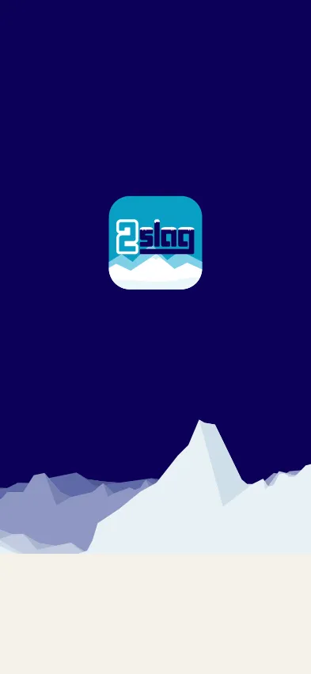
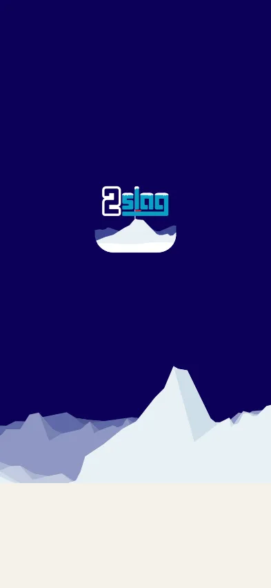
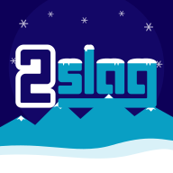

Drie richtingen
Aanbeveling
A · Winterlogo. Het is het logo dat de groep al kent van Home en de flyer, alleen opnieuw opgebouwd voor een icoon: het woordmerk zo groot als het kan, minder sterren, de bergen lager. Op het startscherm lees je ‘2slag’ tot ongeveer 40 px; als favicon blijft het een wit-blauw blokje. B valt het meest op tussen andere apps (lichtblauw), maar het woordmerk in donkerblauw verliest de bekende kleuren. C sluit naadloos aan op de kop en de splash van de app, maar het woordmerk moet kleiner om het panorama ruimte te geven.
Op het startscherm
Iconen van de buren zijn neutrale voorbeelden. Op Android wordt het maskable-icoon rond gesneden (Pixel, Samsung); op iOS krijgt het afgeronde hoeken van het systeem.
De naam onder het icoon
iOS toont ongeveer 12 tekens, Android 12–14 (afhankelijk van het lettertype). De huidige short_name ‘Tweeslag Wispo’ wordt afgekapt.
Aanbeveling
short_name: ‘Wispo’. Het icoon zegt al ‘2slag’, dus de naam eronder hoeft dat niet te herhalen; ‘Wispo’ is hoe iedereen de reis noemt en wordt nergens afgekapt. Alternatieven: ‘2slag Wispo’ (11 tekens, past net) of ‘Wispo 2027’ (past, maar veroudert). name blijft ‘Tweeslag Wispo – Les Deux Alpes’.
Opstarten: icoon → splash → app
De splash is de kop van Home zonder tekst: donkerblauwe lucht, het panorama, en daaronder het papier. Het icoon staat in het midden. Als de app geladen is, vervaagt alleen het icoon en verschijnt de tekst van Home in dezelfde lucht: er verspringt niets. Dat doet het laadscherm in index.html nu al met het logo; het panorama erbij maakt de overgang naar de kop af.
| theme_color | #0d0058 (statusbalk Android, taakwisselaar), ook in donker |
|---|---|
| background_color | #0d0058 (Android-splash: icoon op donkerblauw) |
| iOS-statusbalk | black-translucent: de kop loopt onder de klok door |
| iOS-splash | 30 formaten zoals nu, plus 1206×2622 en 1320×2868 (iPhone 16 Pro / Pro Max en nieuwer) en hun liggende varianten |
| orientation | any in plaats van portrait, zodat een tablet liggend kan; de schermen zijn er op gemaakt (stap 7) |




Wispo 2027 · Les Deux Alpes
Nog 103 dagen
tot de bus vertrekt · vr 5 maart, 19:30
Installatiehulp na de QR-code
De QR-code opent de app in de browser. Wie hem nog niet geïnstalleerd heeft, krijgt bij Welkom (na het kiezen van de naam) een blad in dezelfde stijl. Drie situaties:
Android (Chrome, Samsung)
De app vangt beforeinstallprompt al op. De knop ‘Zet op beginscherm’ opent de echte prompt. Daarna: ‘Gelukt. Je vindt Wispo nu tussen je apps.’ en het blad verdwijnt voorgoed.
iPhone (Safari)
Geen prompt mogelijk, dus drie stappen met dezelfde iconen als in Safari, en een wijzer naar de deelknop onderin. Na installatie herkent de app display-mode: standalone en vraagt het nooit meer.
Geopend vanuit WhatsApp of Instagram
In zo’n ingebouwde browser kun je niet installeren en is opslag tijdelijk. De app herkent dat (user agent) en zegt het eerlijk: ‘Open deze pagina in Safari’ met de knop ‘Kopieer de link’.